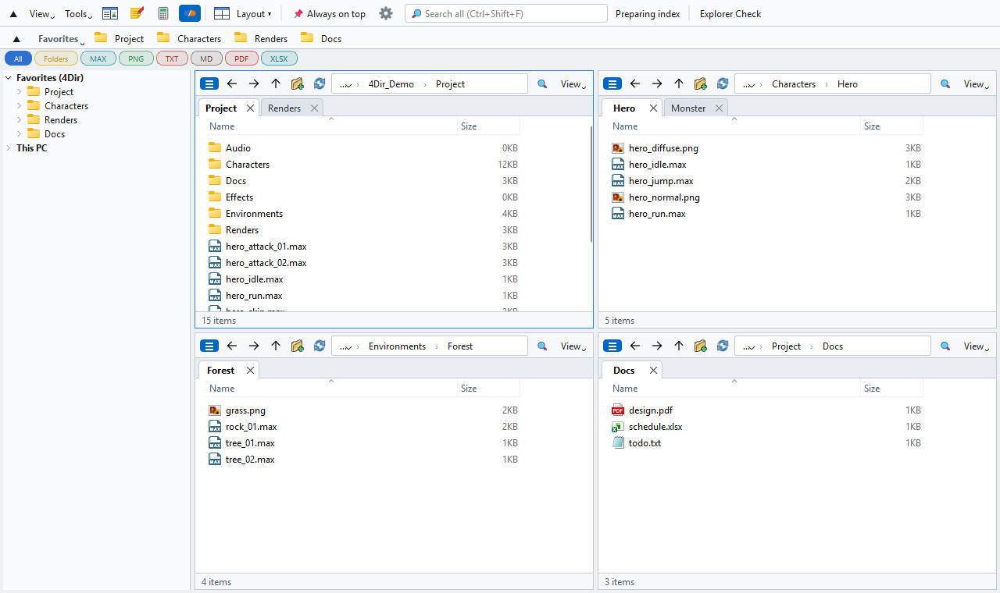

Pengelola file multi-panel yang lebih cepat daripada File Explorer Windows!!
Tanpa instalasi — ekstrak lalu jalankan.
⬇ Unduh 4Dir v0.9.159⊞ Dapatkan di Microsoft Store
Windows 10/11 64-bit · 92 MB · 2026-11-29 · gratis · 🌐 Dukungan bahasa 26
⭐ Suka 4Dir? Beri bintang di GitHub.
⭐ Beri bintang di GitHubDukung 4Dir
4Dir gratis dan tanpa iklan.
Jika aplikasi ini menghemat waktu Anda, donasi kecil membuat pembaruan terus datang.
- Woojin Jeong
Antivirus atau PC kantor memblokir zip? Pakai versi Store yang ditandatangani Microsoft (penautan Win+E tidak tersedia di sana).
⚠ Beberapa program antivirus (Microsoft Defender, HP Wolf Security, dll.) keliru menandai 4Dir.exe di dalam zip sebagai malware. Ini false positive.
4Dir.exe adalah peluncur berukuran 18 KB yang hanya menjalankan aplikasi (sumber), dan sudah dilaporkan ke para vendor.
Bitdefender telah mengonfirmasi bahwa file ini bersih; deteksinya akan dihapus pada pembaruan mendatang.
Jika diblokir, gunakan versi Store.
⬇ Unduhan Anda telah dimulai
4Dir gratis dan akan selalu begitu. Jika membantu Anda, donasi kecil membuat pembaruan terus datang.
Yang baru di v0.9.159
- Menu Saya: hanya ikon (nama kosong tidak lagi menampilkan "?"), ikon kustom (.ico, .png, .exe…) dan pemisah.
- Situs kini tersedia dalam 26 bahasa aplikasi; panduan punya 7 topik baru (Beranda, panel sebagai pratinjau, pratinjau folder, kolom, Menu Saya, warna file, mode ringan).

Fitur
Hingga 20 panel
Tata letak 1, 2, 3, 4, atau 6 panel dengan satu klik, atau grid apa pun hingga 5 × 4. Setiap panel punya tab sendiri.
Tidak mengganggu
Folder dibaca langsung, tanpa tampilan shell Windows yang berat. Tidak ada timer atau polling saat idle — aman dibiarkan terbuka di samping 3ds Max, game, atau aplikasi berat lainnya.
Pencarian instan
Ketik untuk mencari semua nama file di drive Anda. Indeksnya sendiri diperbarui secara real time — tanpa hak admin.
Status SVN sekali lihat
Lencana diubah / ditambah / konflik dibaca langsung dari .svn — folder berubah merah saat ada perubahan di dalamnya. Git dan Perforce lewat overlay Windows.
Terasa seperti Explorer
Pintasan keyboard yang sama, menu klik kanan Windows lengkap, seret & lepas dari dan ke Explorer maupun aplikasi lain. Klik kanan gambar .webp untuk menyimpannya sebagai PNG atau JPG.
Portabel dan privat
Pengaturan tersimpan di folder 4Dir. Tema terang/gelap, 26 bahasa, ganti nama massal, pemulihan sesi, dan pemeriksaan kesehatan Explorer sudah bawaan.

Cara menginstal
- Unduh zip dengan tombol di atas (atau dari Releases di GitHub). Tombol hijau “Code → Download ZIP” di GitHub hanya berisi kode sumber dan tidak bisa dijalankan.
- Klik kanan zip → Properti → centang Buka blokir → OK. (Jika tidak, Windows akan menampilkan peringatan keamanan setiap kali.)
- Ekstrak di mana saja lalu klik dua kali 4Dir.exe. (atau 4Dir.vbs jika 4Dir.exe diblokir)
Jika Windows SmartScreen muncul: klik Info selengkapnya → Tetap jalankan.
Verifikasi unduhan (opsional)
Di Prompt Perintah jalankan certutil -hashfile 4Dir_v0.9.159.zip SHA256 — hasilnya harus sama dengan:
f6855a65675fb1187fb6c6e7212f20340ce176cb5bcc5485d586797c72f04af1
FAQ
Benarkah gratis?
Ya. 4Dir gratis dan open source (GPL-3.0). Tanpa iklan, tanpa akun, tanpa masa percobaan.
Boleh dipakai di kantor?
Ya. 4Dir adalah perangkat lunak bebas GPL-3.0, jadi perusahaan juga bisa memakainya gratis, tanpa biaya lisensi atau registrasi. Karena berjalan tanpa instalasi, cukup pastikan perusahaan Anda mengizinkan aplikasi portabel.
Benarkah lebih cepat daripada File Explorer?
Membuka folder berisi 1.000 file di jendela baru memakan waktu 0,4 dtk di 4Dir dan sekitar 2 dtk di File Explorer. Membuka satu jendela lagi menambah sekitar 10 MB memori di 4Dir dan sekitar 130 MB di File Explorer. Diukur masing-masing 5 kali di PC yang sama (Windows 11, SSD). Dengan puluhan ribu file dalam satu folder, selisihnya mengecil.
Apakah mengirim data?
Tidak ada data pribadi. Aplikasi hanya memeriksa sekali sehari apakah ada versi baru (bisa dimatikan di menu Alat).
Ada yang tidak beres?
Alat → Simpan log untuk laporan masalah, lalu tekan “Kirim lewat email” (atau kirim zip ke support@4dir.net lewat email). Pengguna GitHub juga bisa membuka issue.